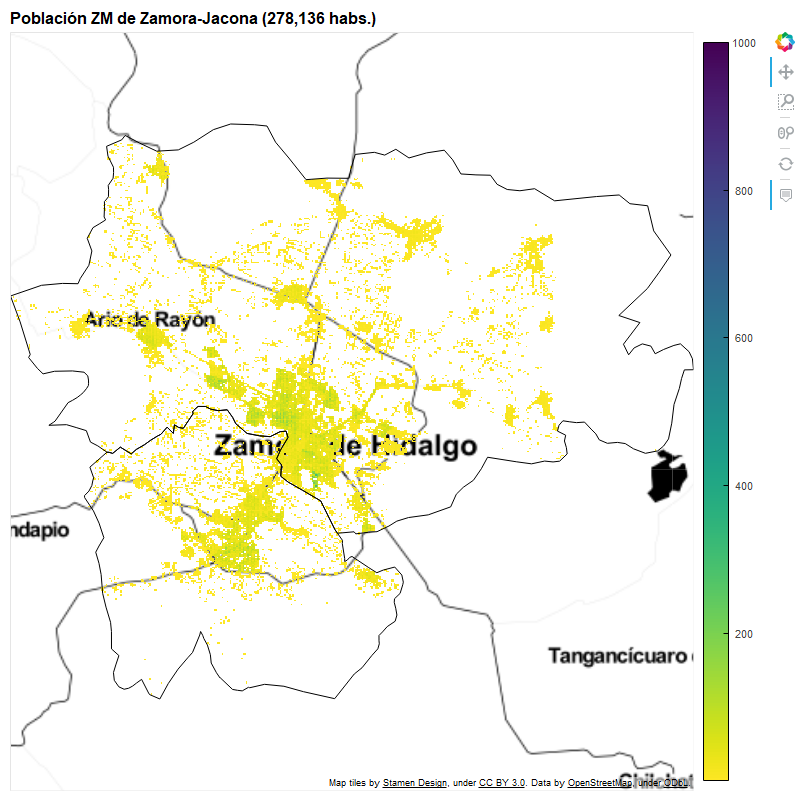

Chihuahua
Ver mapa completo


Acapulco
Ver mapa completoPachuca
Ver mapa completoTulancingo
Ver mapa completoAguascalientes
Ver mapa completoTula
Ver mapa completoGuadalajara
Ver mapa completo

Toluca
Ver mapa completoMorelia
Ver mapa completo
